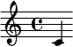
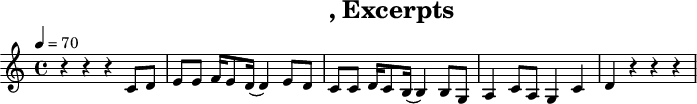

The extension is originated from sphinx-contrib/lilypond , allows LilyPond
music notes to be included in Sphinx-generated documents inline and outline.
Compared to its predecessor, the extension has many new features such as
scale transposing, audio output, layout controlling, and so on.
:lily:`\relative { c' }` is the first note of the C major scale.
Will be rendered as:

is the first note of the C major scale.
Note
Role lily produces a preview image of the music expression (using
-dpreview=#t). You can still write a long music expression as interpreted text,
but only the beginning can be shown.
The lily directive is used to insert a complete LilyPond score as
block level element.
..lily:::noedge::nofooter::audio:
\version "2.20.0"
\header {
title = "翼をください, Excerpts"
}
\score {
<<
\new Staff \relative c' {
\time 4/4
\tempo 4 = 70
r4 r r c8 d e8 e f16 e8 d16 (d4) e8 d
c8 c d16 c8 b16 (b4) b8 g a4 c8 a g4 c4
d4 r r r
}
>>
}
Will be rendered as:

The directive supports the following options:
noheader:
(flag)
Whether to remove the header of score
nofooter:
(flag)
Whether to remove the footer of score
noedge:
(flag)
Whether to remove the blank edges of score
audio:
(falg)
Whether to show a audio player for listen LilyPond-generated MIDI file
transpose:
(text)
Transposing the pitches of score from one to another.
Pitches are written in LilyPond Notation and separated in whitespace.
For example: :transpose:c'd'